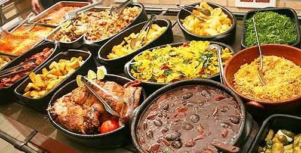

Comidas brasileiras
As comidas brassileiras mais goatosas que você vai ver. Venha conhecer as mais diversas da nossa regiao, do sul ao norte.
ler mais sobre ->As comidas brassileiras mais goatosas que você vai ver. Venha conhecer as mais diversas da nossa regiao, do sul ao norte.
ler mais sobre ->As comidas brassileiras mais goatosas que você vai ver. Venha conhecer as mais diversas da nossa regiao, do sul ao norte.
ler mais sobre ->As comidas brassileiras mais goatosas que você vai ver. Venha conhecer as mais diversas da nossa regiao, do sul ao norte.
ler mais sobre ->